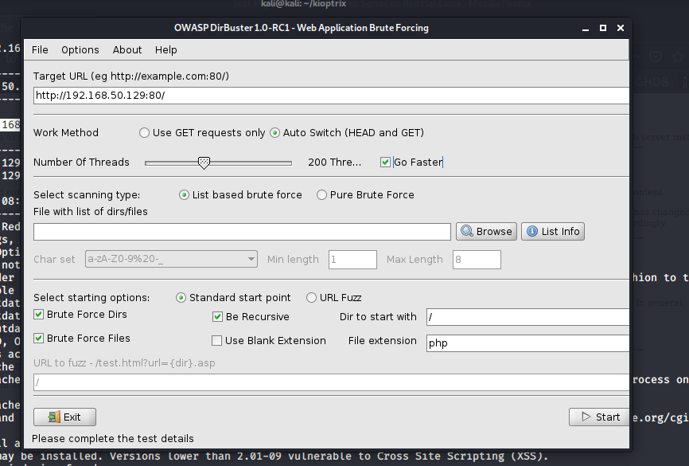

now we ll do directory busting 3 tools prebuilt hai
dirbuster
dirb
gobuster
we used dirbuster

in browse go in /usr/share/wordlists/dirbuster/small list click kar
file extension depends on the server here its apache which uses php
could have also written php,txt,docx,pdf,rar etc and so on bt that wou;d increase the time taken to search for it

if small doest work then use medium
and if that nt enough on interweb there is a large text file also
these wordlists have 100 s of thousands of well kniown directories
eg admin,cgi-bin,etc

aisa scan hoga
meanwhile start burpsuite
also view source code of our website try to find commments and all

in here u can find passwords,keys,user private information and other stuff like this
opened burpsuite:
in proxy tab u get foll:

right click and say send ti repeater
repeater shows u ur repsonse in real time

so went in target and there it was :

so copy http://192.168.50.29
and in target go to scope-add scope-paste it there

this limits to searching for only in scope items
in response tab of this

we are getting apache versions and all which we got previously by nikto too na
so this is also info disclosure
now back to dirbuster

in response code:
200's:okay
400's:theres some sort of error
300's:redirect
500's:server error
now looking at files recieved
usage file seems interesting
open its first file in web page bt proxy of burpsuite mai intercept off karna

u can get info from here
Generated by Webalizer Version 2.01-http://192.168.50.129/usage/
this copy kar in note
bt still not much information disclosed yet na
now looking at mrtg

we got this

this could ve beenn a rabbit hole coz this drectory mrtg had files like webserver.html and log files too
bt on viewing those two pages too itna diffference nahi mila
like foll is the webserver.html

in part 1 e had talked abt poor hygine that they if had a web server wouldbnt have displayed a test page like that bt we got a web server page !
These were some of the enumerations ke methods which we applied
(u might have a different methodology too and other tools too)
so in nutshell:u need to get the service version info which we have in our notes,backend directories,source code,potential vulnerability scanning with nikto
and any info u can diverge
u could even get all this with wappalyser